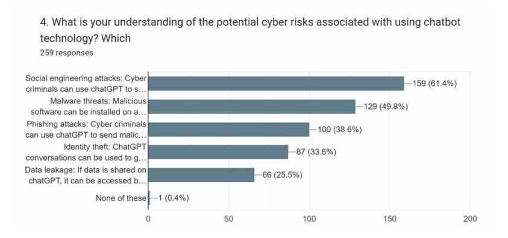
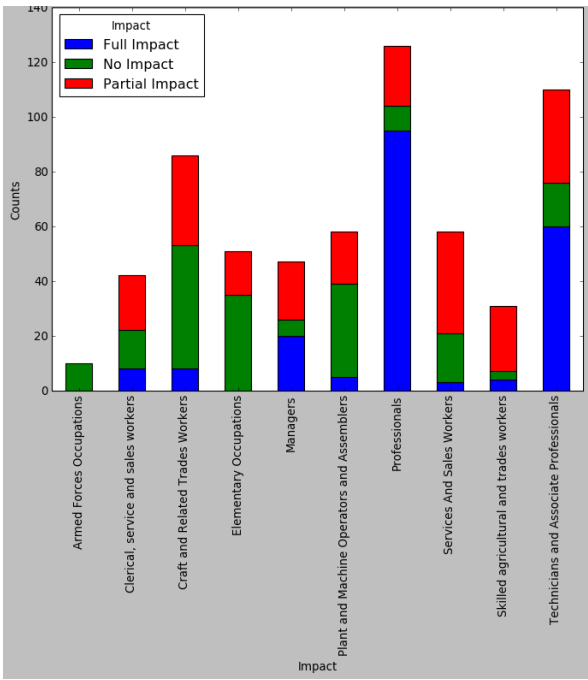

Technology Risks
When it comes to the risks of Artificial Intelligence Chatbots there are many including irresponsible or malicious use, unmanaged growth of AI chatbots, no way to manage the user data that is created, AI take over in jobs, and Misinformation.
The irresponsible or malicious utilization of AI chatbots poses a significant risk in today's digital landscape. In the wrong hands, these powerful tools can be wielded to provide misinformation, deceive individuals, and manipulate public opinion. With the ability to generate fake news and execute social engineering attacks, malicious actors exploit AI chatbots to manipulate emotions, compromise privacy, and engage in illegal activities. The repercussions of such actions are vast, resulting in a loss of trust in online interactions, undermining democratic processes, and inflicting harm upon individuals and communities. To address these risks, it is imperative to establish robust safeguards and ethical guidelines, ensuring responsible deployment of AI chatbots for the betterment of society. According to a survey done by Sebastian (2023) showed that ‘61.4% of the users considered Social engineering attacks as the main cyber threat using chatbots followed by Malware threats (49.8%).’
Figure 4: Survey responses on the understanding of potential cyber risks associated with Chatbots

Data & Graph from Sebastian, G. (2023). Do ChatGPT and Other AI Chatbots Pose a Cybersecurity Risk? International Journal of Security and Privacy in Pervasive Computing, 15(1), 1–11.
The unmanaged growth of AI chatbots presents a significant risk, primarily due to the absence of comprehensive regulations. With the rapid advancements in technology, there is a potential for the widespread deployment of AI chatbots without sufficient oversight or standardized guidelines. This can give rise to a range of concerns, including the proliferation of unreliable or harmful chatbots, breaches of privacy, and unethical practices. In the absence of clear directives and regulations, there is a danger of unregulated experimentation, biased algorithms, and inadequate accountability. To mitigate these risks, it is crucial for policymakers, industry leaders, and experts to collaborate and develop robust frameworks. These frameworks should address the ethical, legal, and societal implications of AI chatbots, ensuring responsible deployment and offering safeguards against potential risks. By establishing comprehensive guidelines, we can foster an environment that promotes the responsible use of AI chatbots, protects user interests, and upholds ethical standards in the development and deployment of this technology. Backing this up the Cable News Network (CNN) covered by Fung (2023) when the CEO of OpenAI, the creators of ChatGPT where he testified before Congress in America. As an industry leader in AI technology Sam Altman the CEO said in his opening remarks “We think that regulatory intervention by governments will be critical to mitigate the risks of increasingly powerful models,” Altman recommended that the AI industry needed regulations to reduce the risks. In the article it also mentions an interview done earlier in the year with Altman where he ‘presented himself as someone who is mindful of the risks posed by AI and even “a little bit scared” of the technology.’ (Fung, 2023) The fact that the CEO of the leading innovation of AI would mention that there is a major risk with AI and its growth shows that AI needs to be regulated.
The improper management of user data collected during conversations is a major danger related to AI chatbots. Conversations, preferences, and behavioral patterns are all types of personal information that AI chatbots regularly collect and store in large volumes. This data that is collected is used for the chatbot to learn from the data. (Hasal et al., 2021) As AI chatbots learn off of There is a chance for abuse, unauthorized access, or data breaches, though, if suitable data governance and security measures aren't in place. These conditions may jeopardize user privacy, reveal private information, and lead to identity theft or other cybercrimes. Additionally, the gathering of user data prompts worries about monitoring and its possible use for discriminating or targeted advertising. Strong data protection rules, encryption standards, and user permission processes must be established in order to guarantee the responsible and safe management of user data by AI chatbots.
The emergence of AI chatbots has presented a significant concern regarding the displacement of human jobs. With the growing adoption of AI chatbot technology in businesses to automate customer service and support functions, there is an increasing apprehension that human workers in these positions could be substituted. The attraction of AI chatbots lies in their efficiency and scalability, which appeals to organizations aiming to streamline operations and cut costs. Nevertheless, this transition may result in unemployment and economic challenges for individuals reliant on these occupations. In a study done by Zarifhonarvar (2023) about the labor market and how AI will impact it. The study concluded ‘that 32.8% of occupations may face a Full Impact, 36.5% may experience a Partial Impact, and 30.7% may have No Impact.’ (Zarifhonarvar, 2023) This tells us that AI would take over some jobs while also some jobs might only face partial or no impact due to AI. It is crucial to proactively tackle this risk by investing in retraining programs, educational initiatives, and creating fresh employment prospects that align with the evolving nature of work. By embracing a well-balanced approach that combines AI chatbot technology with strategies to support human workers, we can mitigate the adverse effects of job displacement and foster a workforce that is more inclusive and resilient.
Figure 5: Different level of Impact for Major Categories in ISOC

Data & Graph from Zarifhonarvar, A. (2023). Economics of ChatGPT: A Labor Market View on the Occupational Impact of Artificial Intelligence.
Finally the digital landscape of today faces a significant danger from the dissemination of misinformation facilitated by AI chatbots. These chatbots possess the capability to generate and distribute content, making them potential tools for spreading false information on a massive scale and with alarming speed. Ill-intentioned individuals can program chatbots to propagate fabricated news, conspiracy theories, or misleading narratives, resulting in confusion, polarization, and a decline in trust toward trustworthy sources of information. The rapid and efficient spread of misinformation by AI chatbots intensifies the challenge of combating fake news. As AI chatbots are trained of the data on the internet ‘biased or false information across the web can potentially influence’ (Choudhury & Shamszare, 2023a) chatbot responses such as ChatGPT.
Made 8 June 2023
by Nathan Quai Hoi (Group: 0611).